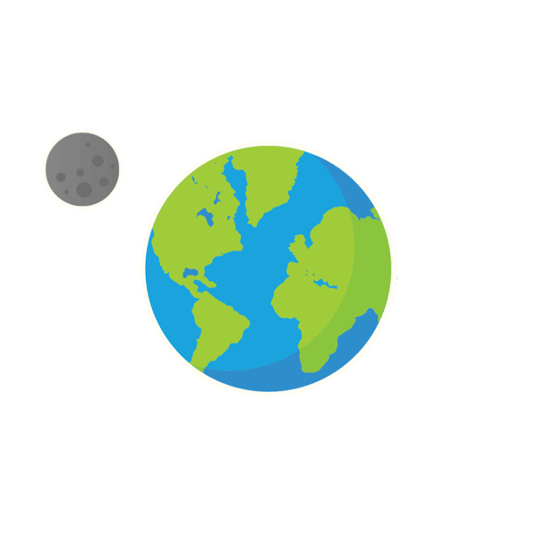
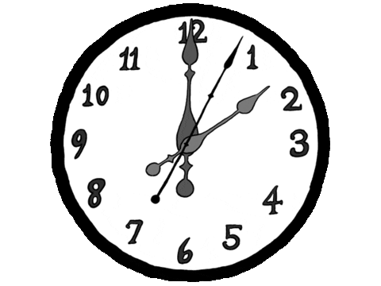
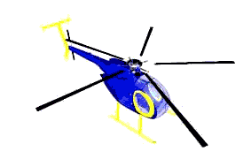
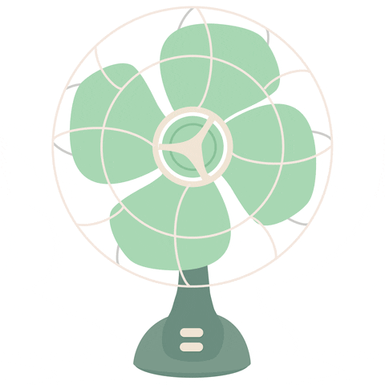
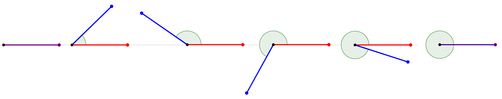
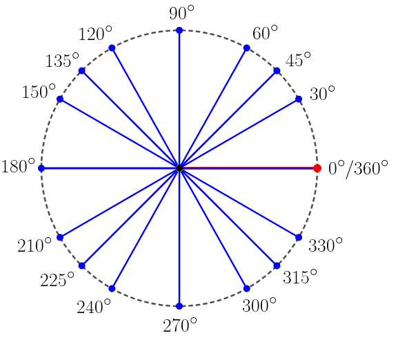
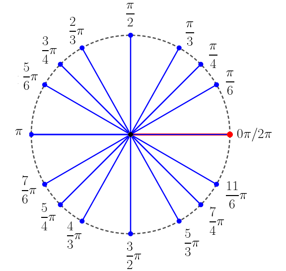
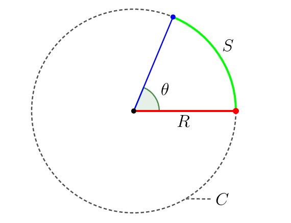
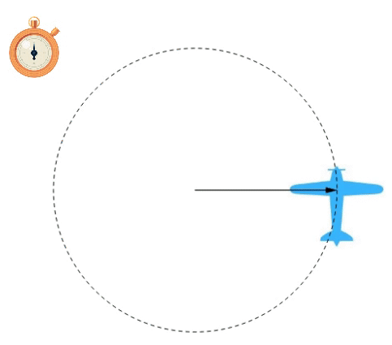
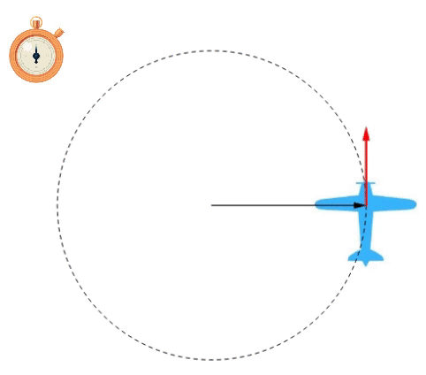

Aula1-6: Movimento circular uniforme (MCU)
Chamamos de movimento circular aquele que se dá sobre uma circunferência ou um arco de circunferência. Começaremos o estudo do movimento circular pelos casos em que ele é regido por velocidade angular e velocidade tangencial constantes. Antes, porém, de falarmos propriamente do movimento, precisamos nos familiarizar com o conceito de ângulo e aprender a lidar com ele adequadamente.
|
 |
 |
 |
 |
Ângulo
O ângulo é a medida da inclinação relativa entre dois segmentos de reta. Ao longo dos milênios, os seres humanos convencionaram diferentes modos de medir essa inclinação, e dois deles se destacaram: um por sua simplicidade e o outro por sua utilidade matemática:

|
Os sumérios: Há muito tempo, os sumérios, para se referirem a uma determinada medida angular, convencionaram que, quando não há inclinação entre os segmentos de reta (eles estão, então, paralelos entre si), o valor dessa medida seria 0 grau; quando a inclinação é máxima — situação em que, após uma das retas varrer uma circunferência, elas voltam a ficar paralelas —, a medida valeria 360° (360 graus). Depois disso, dividiram a circunferência varrida pela reta inclinada em 360 partes iguais, cada uma valendo 1°. Ainda, cada grau pode ser dividido em 60 partes, cada uma valendo 1' (1 minuto); e cada minuto, dividido em 60 partes, dá origem aos segundos, valendo cada um 1'' (1 segundo). A esse sistema chamaremos de sistema de graus. |
 |
Conversão entre graus, minutos e segundos
Para converter graus em minutos ou segundos, e vice-versa, basta aplicar as relações descritas abaixo por meio de uma regra de três.

|
Os matemáticos da renascença: Mais tarde, impulsionados pela então recente criação do cálculo diferencial e integral, os matemáticos — movidos por uma necessidade que não convém descrever aqui — chamaram aquela primeira medida de 0 radiano e a outra de 2π radianos, fazendo nascer um novo sistema de medida angular. A esse sistema chamaremos de sistema de radianos. |
 |
Hoje, em física e matemática, damos prioridade ao sistema de radianos, pois ele é mais versátil do que o de graus. As fórmulas apresentadas a seguir são prova cabal disso: elas só são válidas quando os ângulos são medidos em radianos.
|
Ângulo em função do arco: O ângulo (θ) é igual à razão entre o arco de circunferência (S) e o raio (R) da circunferência:
Circunferência em função do raio: A circunferência (C) é igual ao produto de 2π pelo raio (R):
|
 |
Frequência
-
Frequência: é a quantidade de ciclos, voltas, eventos etc. por intervalo de tempo.
Veja os exemplos abaixo:
I. A Terra rotaciona ao redor do próprio eixo cerca de 365 vezes por ano (rotações por intervalo de tempo);
II. As lâmpadas piscam 60 vezes por segundo (lampejos por intervalo de tempo);
III. Os alunos têm 5 dias de aula por semana (dias de aula por intervalo de tempo);
IV. O pêndulo oscila duas vezes por segundo (oscilações por intervalo de tempo);
V. A velocidade do motor é de 1000 RPM (rotações por minuto) (rotações por intervalo de tempo);
Período
-
Período: é o tempo necessário para que ocorra um ciclo, uma volta, um evento etc.
I. A Terra leva 1/365 de ano para rotacionar uma vez ao redor do próprio eixo (intervalo de tempo para uma rotação).
II. A cada 1/60 de segundo as lâmpadas piscam uma vez (intervalo de tempo para um evento).
III. A cada 1/5 de semana os alunos têm um dia de aula (intervalo de tempo para um dia de aula).
IV. A cada 1/2 segundo o pêndulo oscila uma vez (intervalo de tempo para uma oscilação).
V. A cada 1/1000 de minuto é completada uma rotação no motor (intervalo de tempo para uma rotação).
Conversão de frequência em período e vice-versa
ou
Velocidade angular média
|
 |
A velocidade angular média é a grandeza que indica a quantidade de variação do ângulo por intervalo de tempo. Logo, a fórmula que a fornece é:
Teremos como unidade de medida:
Obs.: No MCU esta grandeza se mantém constante. |
Velocidade linear média (velocidade tangencial)
|
 |
É a grandeza que indica como a posição do móvel sobre a circunferência percorrida se altera com o tempo. É uma velocidade sempre tangente à trajetória — na imagem ao lado, está representada pelo vetor vermelho. Para calculá-la, aplicamos a fórmula:
|
Equação horária do espaço angular
A equação horária do espaço angular fornece o ângulo em função do tempo.
Demonstração:
Fórmula final: